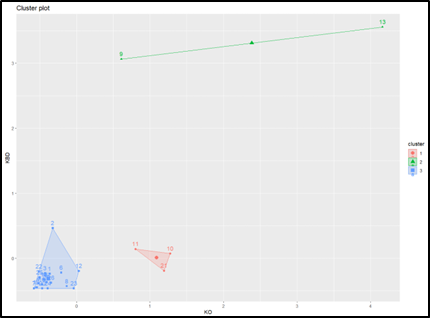

FEATURED PROJECT
Warehouse Capacity Clustering
K-Means clustering analysis identifying warehouse utilisation patterns and logistics insights.

PROJECT OVERVIEW
Warehouse Logistics Clustering Analysis
Developed a warehouse clustering analysis project using K-Means clustering techniques to classify warehouse capacity utilisation and logistics operational patterns.
The project aimed to identify operational similarities, optimise warehouse categorisation, and support logistics performance evaluation through data-driven clustering analysis.
TOOLS & TECHNOLOGIES
KEY INSIGHTS
Cluster Identification
Classified warehouse utilisation into multiple operational cluster groups.
Operational Patterns
Identified similarities in warehouse logistics capacity and operational behaviour.
Logistics Evaluation
Supported warehouse performance analysis through clustering-based data segmentation.